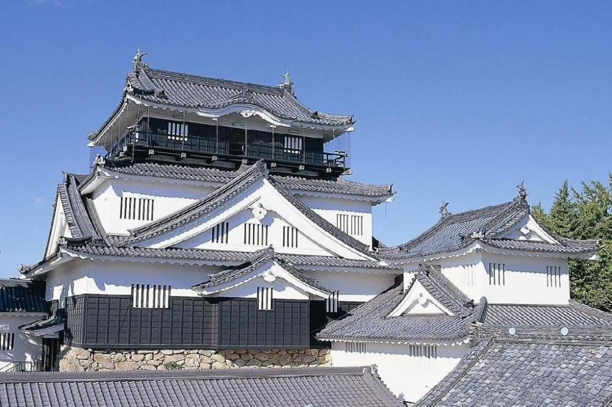

岡崎城の紹介

岡崎城は、愛知県岡崎市にある城で、徳川家康が生まれた場所として知られています。
別名「龍城」とも呼ばれ、龍にまつわる伝説も多く残されています。現在、岡崎城は丘崎公園として整備され、天守閣は1959年に再建されたものです。
岡崎城の見どころ
- 天守閣：3層5階の復興天守閣で、岡崎市のシンボルとなっている。
- 歴史資料館：天守閣内には歴史資料館があり、岡崎城や城下町の歴史、文化を学ぶことが出来る。
- 三河武士のやかた家康館：岡崎公園内には、徳川家康や三河武士に関する展示がある。
- 桜の名所：岡崎公園には桜の名所としても知られ、特に夜桜は美しいです。